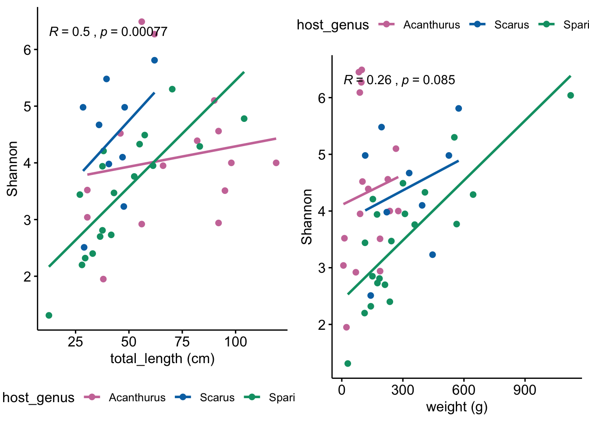
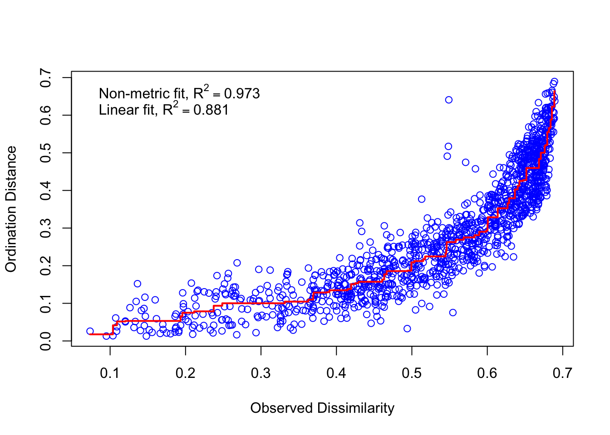

What are the dominant taxa in this system? How diverse are these communities? How similar are samples to each other? Here we look at a) Taxonomic diversity, b) alpha-diversity, and c) beta-diversity.
Before we can start to understand a system, we need to know something about its parts. So lets start with a quick look at Class-level diversity. Of course, you can change this to any taxonomic rank you wish. Here we created a sortable table that has the total number of reads and ASVs for each class
# generate the ASV table
tax_asv <- table(tax_table(ps_slv_work_filt)[, "Class"],
exclude = NULL, dnn = "Taxa")
tax_asv <- as.data.frame(tax_asv, make.names = TRUE)
#### change <NA> to Unclassified
# Get levels and add "None"
levels <- levels(tax_asv$Taxa)
levels[length(levels) + 1] <- "Unclassified"
# refactor Taxa to include "Unclassified" as a factor level
# and replace NA with "Unclassified"
tax_asv$Taxa <- factor(tax_asv$Taxa, levels = levels)
tax_asv$Taxa[is.na(tax_asv$Taxa)] <- "Unclassified"
# generate the reads table
tax_reads <- factor(tax_table(ps_slv_work_filt)[, "Class"], exclude = NULL)
tax_reads <- apply(otu_table(ps_slv_work_filt), MARGIN = 1,
function(x) {
tapply(x, INDEX = tax_reads,
FUN = sum, na.rm = FALSE,
simplify = TRUE)})
#RENAME NA --> Unclassified
rownames(tax_reads)[72] <- "Unclassified"
tax_reads <- as.data.frame(tax_reads, make.names = TRUE)
tax_reads <- cbind(tax_reads, reads = rowSums(tax_reads))
#DELETE all but last column
tax_reads <- tax_reads[51]
tax_reads <- setDT(tax_reads, keep.rownames = TRUE)[]
# merge the two tables and make everything look pretty
# in an interactive table
taxa_read_asv_tab <- merge(tax_reads, tax_asv, by.x = "rn", by.y = "Taxa")
taxa_read_asv_tab <- mutate(taxa_read_asv_tab,
prop_of_ASVs = Freq / sum(Freq),
prop_of_reads = reads / sum(reads))
taxa_read_asv_tab <- taxa_read_asv_tab[c(1, 2, 5, 3, 4)]
names(taxa_read_asv_tab) <- c("Class", "total_reads", "prop_of_reads",
"total_ASVs", "prop_of_ASVs")
taxa_read_asv_tab2 <- taxa_read_asv_tab
taxa_read_asv_tab2$prop_of_reads <- round(taxa_read_asv_tab2$prop_of_reads,
digits = 6)
taxa_read_asv_tab2$prop_of_ASVs <- round(taxa_read_asv_tab2$prop_of_ASVs,
digits = 6)For your information, the dataset has a total of 2934996 reads across 11144 ASVs.
#kills sci notation
options(scipen = 999)
write.table(taxa_read_asv_tab2, "DATA/PHYLOSEQ/TABLES/OUTPUT/SUPP/Table_S4.txt",
sep = "\t", row.names = FALSE, quote = FALSE)
datatable(taxa_read_asv_tab2, rownames = FALSE, width = "100%",
colnames = c("Class", "total_reads", "prop_of_reads",
"total_ASVs", "prop_of_ASVs"),
caption =
htmltools::tags$caption(
style = "caption-side: bottom; text-align: left;",
"Table: ",
htmltools::em("Total reads & ASVs by Class")),
extensions = "Buttons",
options = list(columnDefs =
list(list(className = "dt-left", targets = 0)),
dom = "Blfrtip", pageLength = 5,
lengthMenu = c(5, 10, 35, 70),
buttons = c("csv", "copy")))Looks like Proteobacteria, Firmicutes, Fusobacteria, Planctomycetes, and Bacteroidetes dominate in the read department. Curiously, Fusobacteria has comparatively low ASV richness.
Much of the analyses we do from here on out will be at the Class & Family levels. We chose not to focus on the Genus level because there simply is not enough resolution in our dataset to build a cohesive story. This is because these fish are (microbially) understudied and we are dealing with short read data. On the other hand, Phylum level is too coarse for groups like Proteobacteria and Firmicutes. Order did not provide any additional information and can be cumbersome for taxa with poorly resolved lineages. Depending on the dataset, you may want to change your strategy.
Lets take a closer look Class-level taxonomic content of these communities. There are numerous ways to do this but here we chose to collapse samples by host species and display the relative abundance of the most dominant taxa. We also generated alternative views of taxonomic composition for individual samples—a box-and-whisker plot as well as bar plots separated by host and taxa. The figures and code are available in Appendix A.
Stacked bar charts are not the best but we like them for a birds eye view of the data. Here we calculate the relative abundance of taxa for each host species at the Class level. It turns out this is not too easy in phyloseq and there is a lot of (messy) code.
# calculate the averages and merge by species
ps_slv_filt_AVG <- transform_sample_counts(ps_slv_work_filt,
function(x) x / sum(x))
mergedGP_BAR <- merge_samples(ps_slv_filt_AVG, "Sp")
SD_BAR <- merge_samples(sample_data(ps_slv_filt_AVG), "Sp")
# merge taxa by rank. If you choose a different rank be sure to change
# the rank throughout this code chunk
mdata_phy <- tax_glom(mergedGP_BAR, taxrank = "Class", NArm = FALSE)
mdata_phyrel <- transform_sample_counts(mdata_phy, function(x) x / sum(x))
meltd <- psmelt(mdata_phyrel)
meltd$Class <- as.character(meltd$Class)
# calculate the total relative abundance for all taxa
means <- ddply(meltd, ~Class, function(x) c(mean = mean(x$Abundance)))
means$mean <- round(means$mean, digits = 8)
# this order in decending fashion
taxa_means <- means[order(-means$mean), ]
# ditch the sci notation
taxa_means <- format(taxa_means, scientific = FALSE)
#RENAME NA to UNCLASSIFIED
taxa_means$Class <- gsub("NA", "Unclassified", taxa_means$Class)Since our goal is to generate a figure and we only have 9 colors, some taxa will need to be put into an Other category. We can define ‘Other’ however we like so lets take a look at the overall relative abundance of each Class.
datatable(taxa_means, rownames = FALSE, width = "65%",
colnames = c("Class", "mean"), caption =
htmltools::tags$caption(style = "caption-side: bottom;
text-align: left;", "Table: ",
htmltools::em("Class-level
relative abundance.")),
extensions = "Buttons",
options = list(columnDefs = list(list(className = "dt-center",
targets = "_all")),
dom = "Blfrtip", pageLength = 10,
lengthMenu = c(5, 10, 50, 70),
buttons = c("csv", "copy")))Inspecting the table it looks like if we choose a cutoff of 2% (0.02) we get 9 taxa—sounds pretty good. The rest go into the ‘Other’ category. No matter what, we will always gloss over some groups using such a coarse approach. But as we will see later, some of these low abundance groups will reappear when we look at the level of individual ASVs.
Here we define the Other category by combining all taxa with less than 2% of total reads.
Other <- means[means$mean <= 0.02, ]$Class
# or you can chose specifc taxa like this
# Other_manual <- c("list", "taxa", "in", "this", "format")At a 2% abundance cutoff, 63 Classes are grouped into the ‘Other’ category. Next we will melt all these classes into the Other category and then craft the bar chart. It took some tweaking to get the bar chart to look just right—so there is a lot of code here—and it could most certainly be better. While we’re at it, we will also save a copy of the figure so we can tweak it later and make it look pretty.
meltd[meltd$Class %in% Other, ]$Class <- "Other"
samp_names <- aggregate(meltd$Abundance,
by = list(meltd$Sample), FUN = sum)[, 1]
.e <- environment()
meltd[, "Class"] <- factor(meltd[, "Class"], sort(unique(meltd[, "Class"])))
meltd <- meltd[order(meltd[, "Class"]), ]
# Here we order Classes by the Phylum they belong to.
meltd$Class <- factor(meltd$Class,
levels = c("Bacteroidia", "Clostridia",
"Erysipelotrichia", "Fusobacteriia",
"Alphaproteobacteria", "Deltaproteobacteria",
"Gammaproteobacteria", "Planctomycetacia",
"Oxyphotobacteria", "Other")) fig2A <- ggplot(meltd,
aes_string(x = "Sample", y = "Abundance", fill = "Class"),
environment = .e,
ordered = TRUE,
xlab = "x-axis label", ylab = "y-axis label")
fig2A <- fig2A + geom_bar(stat =
"identity",
position = position_stack(reverse = TRUE),
width = 0.95) +
coord_flip() +
theme(aspect.ratio = 1 / 2)
fig2A <- fig2A + scale_fill_manual(values = friend_pal)
fig2A <- fig2A + theme(axis.text.x = element_text(angle = 0,
hjust = 0.45,
vjust = 1))
fig2A <- fig2A + guides(fill = guide_legend(override.aes = list(colour = NULL),
reverse = FALSE)) +
theme(legend.key = element_rect(colour = "black"))
fig2A <- fig2A + labs(x = "Host species",
y = "Relative abundance (% total reads)",
title = "Abundance of bacterial taxa across host species")
fig2A <- fig2A + theme(axis.line = element_line(colour = "black"),
panel.grid.major = element_blank(),
panel.grid.minor = element_blank(),
panel.border = element_rect(colour = "black",
fill = NA, size = 1))
fig2AFigure 2A
pdf("DATA/PHYLOSEQ/FIGURES/OUTPUT/Figure_2A.pdf")
fig2A
invisible(dev.off())Armed with a picture of taxonomic composition we can move on to diversity estimates.
Alpha diversity describes the diversity in a sample or site. There are several alpha diversity metrics available in phyloseq: Observed, Chao1, ACE, Shannon, Simpson, InvSimpson, Fisher. Play around to see how different metrics change or confirm these results.
Here we want to know if diversity is significantly different across host species. In order to do that we need to know if we should run a parametric or non-parametric test, and for that we need to know if our data is normally distributed. Most of the ideas/code for alpha (and subsequent beta) diversity statistics come from this workshop tutorial by Kim Dill-McFarland and Madison Cox.
First we run the diversity estimates, add these data to our summary table, and save a copy of this table.
diversity <- estimate_richness(ps_slv_work_filt,
measures = c("Observed", "Chao1", "ACE",
"Shannon", "Simpson", "InvSimpson",
"Fisher"))
diversity_calc <- diversity %>% rownames_to_column("host_ID")
# round values
diversity_calc[c(3, 5, 10)] <- round(diversity_calc[c(3, 5, 10)], 1)
diversity_calc[c(4, 6, 7, 9)] <- round(diversity_calc[c(4, 6, 7, 9)], 2)
diversity_calc[8] <- round(diversity_calc[8], 3)
host_summary <- merge(host_details, diversity_calc)
host_summary$Observed <- NULL
host_summary <- host_summary[c(1, 2, 3, 4, 5, 8, 9, 10, 11, 12, 13,
14, 15, 6, 7, 16, 17, 18, 19, 20, 21, 22, 23)]
write.table(host_summary, "DATA/PHYLOSEQ/TABLES/OUTPUT/SUPP/Table_S3.txt",
sep = "\t", row.names = FALSE, quote = FALSE,
col.names = c("Sample ID", "Host genus", "Host species",
"Common name", "NCBI tAxID", "Collection date",
"Life phase", "Weight (g)", "Total length (cm)",
"Foregut length (cm)", "Midgut length (cm)",
"Hindgut length (cm)", "Total gut length (cm)",
"Total reads", "Total ASVs", "Chao1", "Chao1 (se)",
"ACE", "ACE (se)", "Shannon", "Simpson",
"InvSimpson", "Fisher"))
datatable(host_summary, rownames = FALSE, width = "100%",
colnames = c("Sample ID", "Host genus", "Host species",
"Common name", "NCBI tAxID", "Collection date",
"Life phase", "Weight (g)", "Total length (cm)",
"Foregut length (cm)", "Midgut length (cm)",
"Hindgut length (cm)", "Total gut length (cm)",
"Total reads", "Total ASVs", "Chao1", "Chao1 (se)",
"ACE", "ACE (se)", "Shannon", "Simpson", "InvSimpson",
"Fisher"),
caption =
htmltools::tags$caption(style =
"caption-side: bottom; text-align:
left;", "Table: ",
htmltools::em("Host-associated metadata &
microbial diversity")),
extensions = "Buttons", options =
list(columnDefs = list(list(className = "dt-left", targets = 0)),
dom = "Blfrtip", pageLength = 5, lengthMenu = c(5, 10, 50),
buttons = c("csv", "copy"), scrollX = TRUE,
scrollCollapse = TRUE))This table also scrolls horizontally.
Next, we add the diversity estimates to our phyloseq object, and test if the data are normally distributed using Shapiro-Wilk Normality test. We will focus on the inverse Simpson and Shannon diversity estimates and Chao’s richness estimate but this approach can be used for any metric.
# Convert to ps object
sample_div <- sample_data(diversity)
# Create new ps object with diversity estimates added to sample_data
ps_slv_work_filt_div <- merge_phyloseq(ps_slv_work_filt, sample_div)
# Run Shapiro test
shapiro_test_Shan <- shapiro.test(sample_data(ps_slv_work_filt_div)$Shannon)
shapiro_test_invSimp <- shapiro.test(sample_data(ps_slv_work_filt_div)$InvSimpson)
shapiro_test_Chao1 <- shapiro.test(sample_data(ps_slv_work_filt_div)$Chao1)
shapiro_test_Observed <- shapiro.test(sample_data(ps_slv_work_filt_div)$Observed)Shapiro-Wilk Normality Test for Shannon index.
##
## Shapiro-Wilk normality test
##
## data: sample_data(ps_slv_work_filt_div)$Shannon
## W = 0.98228, p-value = 0.6513Shapiro-Wilk Normality Test for inverse Simpson index.
##
## Shapiro-Wilk normality test
##
## data: sample_data(ps_slv_work_filt_div)$InvSimpson
## W = 0.60454, p-value = 0.0000000002276Shapiro-Wilk Normality Test for Chao1 richness estimator.
##
## Shapiro-Wilk normality test
##
## data: sample_data(ps_slv_work_filt_div)$Chao1
## W = 0.89305, p-value = 0.0002855Shapiro-Wilk Normality Test for Observed ASV richness estimator.
##
## Shapiro-Wilk normality test
##
## data: sample_data(ps_slv_work_filt_div)$Observed
## W = 0.89591, p-value = 0.0003531Ok, since the p-values are significant for the inverse Simpson, Chao richness, and Observed ASV richness we reject the null hypothesis that these data are normally distributed. However, the Shannon estimates appear normally distributed. So lets see if diversity is significantly different between host species based on the Shannon index.
Since the Shannon data is normally distributed we can test for significance using ANOVA (a parametric test).
sampledataDF <- data.frame(sample_data(ps_slv_work_filt_div))
aov.shannon <- aov(Shannon ~ Sp, data = sampledataDF)
#Call for the summary of that ANOVA, which will include P-values
summary(aov.shannon)## Df Sum Sq Mean Sq F value Pr(>F)
## Sp 4 19.13 4.782 3.906 0.00833 **
## Residuals 45 55.10 1.224
## ---
## Signif. codes: 0 '***' 0.001 '**' 0.01 '*' 0.05 '.' 0.1 ' ' 1Ok, the results of the ANOVA are significant. Here we use the Tukey’s HSD (honestly significant difference) post-hoc test to determine which pairwise comparisons are different.
TukeyHSD(aov.shannon)## Tukey multiple comparisons of means
## 95% family-wise confidence level
##
## Fit: aov(formula = Shannon ~ Sp, data = sampledataDF)
##
## $Sp
## diff lwr upr p adj
## AcTra-AcCoe 0.7421379 -0.78560423 2.26987998 0.6431490
## ScTae-AcCoe 0.4727303 -1.05501185 2.00047236 0.9030495
## SpAur-AcCoe -0.9230990 -2.33591246 0.48971439 0.3551484
## SpVir-AcCoe 0.3323910 -1.12853187 1.79331396 0.9664219
## ScTae-AcTra -0.2694076 -1.75153517 1.21271993 0.9852679
## SpAur-AcTra -1.6652369 -3.02859596 -0.30187785 0.0096995
## SpVir-AcTra -0.4097468 -1.82289999 1.00340634 0.9218562
## SpAur-ScTae -1.3958293 -2.75918834 -0.03247023 0.0424253
## SpVir-ScTae -0.1403392 -1.55349237 1.27281396 0.9985589
## SpVir-SpAur 1.2554901 -0.03255018 2.54353034 0.0593081Looks like Sparisoma aurofrenatum is significantly different from Scarus taeniopterus and Acanthurus tractus.
Now we can look at the results on the inverse Simpson diversity and Chao’s richness. Since host species is categorical, we use Kruskal-Wallis (non-parametric equivalent of ANOVA) to test for significance.
Kruskal-Wallis of inverse Simpson index.
#library(FSA)
#dunnTest(InvSimpson ~ Sp, data = sampledataDF, method="bh")
kruskal.test(InvSimpson ~ Sp, data = sampledataDF)##
## Kruskal-Wallis rank sum test
##
## data: InvSimpson by Sp
## Kruskal-Wallis chi-squared = 13.779, df = 4, p-value = 0.008034Kruskal-Wallis of Chao1 richness estimator.
#dunnTest(Chao1 ~ Sp, data = sampledataDF, method="bh")
kruskal.test(Chao1 ~ Sp, data = sampledataDF)##
## Kruskal-Wallis rank sum test
##
## data: Chao1 by Sp
## Kruskal-Wallis chi-squared = 13.992, df = 4, p-value = 0.007321Kruskal-Wallis of Observed ASV richness index.
#library(FSA)
#dunnTest(Observed ~ Sp, data = sampledataDF, method="bh")
kruskal.test(Observed ~ Sp, data = sampledataDF)##
## Kruskal-Wallis rank sum test
##
## data: Observed by Sp
## Kruskal-Wallis chi-squared = 14.153, df = 4, p-value = 0.006822For the inverse Simpson, Chao1, and Observed richness the results of the Kruskal-Wallis rank sum test are significant. So we can look at pairwise comparisons using Wilcoxon rank sum test for post-hoc analysis.
Pairwise significance test for inverse Simpson index.
pairwise.wilcox.test(sampledataDF$InvSimpson, sampledataDF$Sp,
p.adjust.method = "fdr")##
## Pairwise comparisons using Wilcoxon rank sum test
##
## data: sampledataDF$InvSimpson and sampledataDF$Sp
##
## AcCoe AcTra ScTae SpAur
## AcTra 0.545 - - -
## ScTae 0.963 0.545 - -
## SpAur 0.042 0.042 0.108 -
## SpVir 0.545 0.789 0.545 0.004
##
## P value adjustment method: fdrPairwise significance test for Chao1 richness estimator.
pairwise.wilcox.test(sampledataDF$Chao1, sampledataDF$Sp,
p.adjust.method = "fdr")##
## Pairwise comparisons using Wilcoxon rank sum test
##
## data: sampledataDF$Chao1 and sampledataDF$Sp
##
## AcCoe AcTra ScTae SpAur
## AcTra 0.628 - - -
## ScTae 0.617 0.666 - -
## SpAur 0.030 0.030 0.019 -
## SpVir 0.666 0.628 0.304 0.046
##
## P value adjustment method: fdrPairwise significance test for Observed ASV richness index.
pairwise.wilcox.test(sampledataDF$Observed, sampledataDF$Sp,
p.adjust.method = "fdr")##
## Pairwise comparisons using Wilcoxon rank sum test
##
## data: sampledataDF$Observed and sampledataDF$Sp
##
## AcCoe AcTra ScTae SpAur
## AcTra 0.677 - - -
## ScTae 0.677 0.730 - -
## SpAur 0.026 0.026 0.019 -
## SpVir 0.730 0.677 0.304 0.039
##
## P value adjustment method: fdrAgain we see that only Sp. aurofrenatum is significantly different from the other hosts. For the inverse Simpson index, Sp. aurofrenatum is significantly different from three of the four host species and Chao1 richness estimator, Sp. aurofrenatum is significantly different from all other host species. Now we can plot the results.
Here we plot the results of Shannon diversity index. We will save a copy of the figure for later tweaking. We use the color palette described above to delineate host species.
fig2B <- plot_richness(ps_slv_work_filt, x = "Sp",
measures = c("Observed",
"Shannon",
"InvSimpson",
"Chao1"),
color = "Sp", nrow = 1)
fig2B <- fig2B + geom_boxplot() + geom_jitter(width = 0.05)
fig2B <- fig2B + scale_colour_manual(values = samp_pal) +
labs(x = "Host species",
y = "Diversity",
title = "Alpha diversity of bacterial
communities in herbivorous reef fish")
#fig2B + geom_boxplot(aes(colour = black))
#fig2B <- fig2B + theme_bw() + geom_point(size = 2.5, aes(color = Sp)) +
fig2BFigure 2B
pdf("DATA/PHYLOSEQ/FIGURES/OUTPUT/Figure_2B.pdf")
fig2B
invisible(invisible(dev.off()))Next we wanted to know if any alpha-diversity metrics were correlated with host physical characteristics. At the time of collection, we recorded host weight, total length, total gut length, as well as the length of individual gut segments (fore, mid, hind).
When considering the dataset as a whole (i.e., all samples), we found no correlation between any physical characteristics and any diversity metrics. If we split samples by genera we found that neither Acanthurus nor Scarus were not significant for any parameters while Sparisoma showed significant results for all parameters except hindgut_length.
dt <- read.table("DATA/PHYLOSEQ/TABLES/OUTPUT/SUPP/Table_S3.txt",
sep = "\t", header = TRUE)
library(ggpubr)
scarus <- host_summary[host_summary$host_genus %in% "Scarus", ]
sparisoma <- host_summary[host_summary$host_genus %in% "Sparisoma", ]
acanthurus <- host_summary[host_summary$host_genus %in% "Acanthurus", ]
alphametric <- c("total_ASVs", "Chao1", "ACE", "Shannon",
"Simpson", "InvSimpson", "Fisher")
physical_char <- c("weight", "total_length", "foregut_length",
"midgut_length", "hindgut_length", "total_gut_length")
# Full set: not significant -> "weight", "total_length"
#"foregut_length", R = 0.32
#"midgut_length", R = 0.50
#"hindgut_length", R = 0.17-0.34
#"total_gut_length" R = 0.50
#By genus and midgut_length :
# scarus NS
# sparisoma R = 0.8
# acanthurus NS
# acanthurus not significant for any parameters
# scarus not significant for any parameters
# sparisoma significant for all parameters except hindgut_length was a bit weak
# "weight", "total_length" "foregut_length" "midgut_length"
# "hindgut_length" "total_gut_length"
# To do all diversity metric change "y = " to y = alphametric and
# ylab = alphametric
par(mfrow = c(2, 3))
shan_by_length <- ggscatter(host_summary, x = "total_gut_length",
y = "Shannon", add = "reg.line",
conf.int = FALSE,cor.coef = TRUE,
cor.method = "spearman",
xlab = "total_length (cm)", ylab = "Shannon",
color = "host_genus", palette = samp_pal,
legend = "bottom")
shan_by_weight <- ggscatter(host_summary, x = "weight", y = "Shannon",
add = "reg.line", conf.int = FALSE,
cor.coef = TRUE, cor.method = "spearman",
xlab = "weight (g)", ylab = "Shannon",
color = "host_genus", palette = samp_pal, legend = "top")
grid.arrange(shan_by_length, shan_by_weight, ncol = 2)
#ggscatter(host_summary, x = "total_gut_length", y = alphametric,
# add = "reg.line", conf.int = FALSE,
# cor.coef = TRUE, cor.method = "spearman",
# xlab = "mid-gut length (cm)", ylab = alphametric,
# color = "host_genus", palette = samp_pal)
#, facet.by = "host_species")
######################################################
#shapiro.test(host_summary$Shannon) # => p = 0.1229
## Shapiro-Wilk normality test for wt
#shapiro.test(host_summary$midgut_length) # => p = 0.09
#ggqqplot(host_summary$Shannon) # => p = 0.1229
## Shapiro-Wilk normality test for wt
#ggqqplot(host_summary$midgut_length) # => p = 0.09
######################################################Beta diversity basically tells us how similar or dissimilar samples are to one another. Phyloseq offers several ordination methods and distance metrics. Here we use non metric multidimensional scaling (NMDS) coupled with Jensen–Shannon divergence. We also save a copy of the figure for later tweaking.
To see the full output of the NMDS analysis, remove the results = 'hide' tag from the code chunk.
set.seed(3131)
ord.nmds.jsd_slv <- ordinate(ps_slv_work_filt, method = "NMDS",
distance = "jsd")
stressplot(ord.nmds.jsd_slv)
##
## Call:
## metaMDS(comm = ps.dist)
##
## global Multidimensional Scaling using monoMDS
##
## Data: ps.dist
## Distance: user supplied
##
## Dimensions: 2
## Stress: 0.1646318
## Stress type 1, weak ties
## Two convergent solutions found after 20 tries
## Scaling: centring, PC rotation
## Species: scores missingWe see that a convergent solution was reached around 20 iterations and our stress is below 0.20, meaning that 2-axes are sufficient to view the data. Generally, we are looking for stress values below 0.2. If the stress values are high, you may need to add more axes to the ordination. Lets visualize the plot.
fig2C <- plot_ordination(ps_slv_work_filt, ord.nmds.jsd_slv,
color = "Sp", label = "SamName",
title = "Jensen-Shannon divergence")
fig2C <- fig2C + geom_point(size = 4) +
geom_point(shape = 1, size = 3.6, colour = "black", stroke = 0.75)
# + xlim(-0.4, 0.4) + ylim(-0.4, 0.4)
fig2C <- fig2C + scale_colour_manual(values = samp_pal)
fig2C <- fig2C + theme(axis.line = element_line(colour = "black"),
panel.background = element_blank(),
panel.grid.major = element_line("grey"),
panel.grid.minor = element_line("grey"),
panel.border =
element_rect(colour = "black", fill = NA, size = 1)) +
theme(legend.key = element_rect(colour = "black"))
fig2C <- fig2C + coord_fixed()
fig2C <- fig2C + stat_ellipse(type = "t") + theme_bw()
fig2CFigure 2C
pdf("DATA/PHYLOSEQ/FIGURES/OUTPUT/Figure_2C.pdf")
fig2C
invisible(dev.off())So we can see some clustering within groups and spread between groups, but this is not a test for statistical differences. Do microbial communities differ significantly by host taxa?
To test whether microbial communities differ by host species we can use permutational analysis of variance (PERMANOVA) or analysis of similarity (ANOSIM). PERMANOVA does not assume normality but does assume equal beta dispersion between groups. We will test beta dispersion below.
First we use the adonis function in vegan to run a PERMANOVA test. This will tell us whether host species have similar centroids or not.
set.seed(1911)
fish.jsd <- phyloseq::distance(ps_slv_work_filt, method = "jsd")
sampledf <- data.frame(sample_data(ps_slv_work_filt))
fish_adonis <- adonis(fish.jsd ~ Sp, data = sampledf, permutations = 1000)
fish_adonis##
## Call:
## adonis(formula = fish.jsd ~ Sp, data = sampledf, permutations = 1000)
##
## Permutation: free
## Number of permutations: 1000
##
## Terms added sequentially (first to last)
##
## Df SumsOfSqs MeanSqs F.Model R2 Pr(>F)
## Sp 4 4.4045 1.10113 16.52 0.59489 0.000999 ***
## Residuals 45 2.9995 0.06665 0.40511
## Total 49 7.4040 1.00000
## ---
## Signif. codes: 0 '***' 0.001 '**' 0.01 '*' 0.05 '.' 0.1 ' ' 1These results indicate that centroids are significantly different across host species meaning that communities are different by host species.
We can also use the pairwiseAdonis package for pair-wise PERMANOVA analysis.
pairwise.adonis(fish.jsd, factors = sampledf$Sp, p.adjust.m = "bonferroni")## pairs Df SumsOfSqs F.Model R2 p.value p.adjusted sig
## 1 AcCoe vs AcTra 1 0.9511904 9.643336 0.3913162 0.002 0.02 .
## 2 AcCoe vs ScTae 1 1.3507311 21.403824 0.5879554 0.001 0.01 *
## 3 AcCoe vs SpAur 1 1.5267419 25.208974 0.5702230 0.001 0.01 *
## 4 AcCoe vs SpVir 1 1.2852392 16.065426 0.4858678 0.001 0.01 *
## 5 AcTra vs ScTae 1 0.7586873 10.699312 0.4007336 0.001 0.01 *
## 6 AcTra vs SpAur 1 1.3229620 19.765485 0.4970513 0.001 0.01 *
## 7 AcTra vs SpVir 1 0.9806215 11.402876 0.3878150 0.001 0.01 *
## 8 ScTae vs SpAur 1 1.0351877 25.696356 0.5623283 0.001 0.01 *
## 9 ScTae vs SpVir 1 1.0661860 18.907582 0.5122953 0.001 0.01 *
## 10 SpAur vs SpVir 1 0.7558760 13.640523 0.3827251 0.001 0.01 *Here we see again we see that communities are different by host species.
However, PERMANOVA assumes equal beta dispersion so we will use the betadisper function from the vegan package to calculate beta dispersion values.
beta_adonis <- betadisper(fish.jsd, sampledf$Sp, bias.adjust = TRUE)
beta_adonis##
## Homogeneity of multivariate dispersions
##
## Call: betadisper(d = fish.jsd, group = sampledf$Sp, bias.adjust =
## TRUE)
##
## No. of Positive Eigenvalues: 34
## No. of Negative Eigenvalues: 15
##
## Average distance to median:
## AcCoe AcTra ScTae SpAur SpVir
## 0.2980 0.3098 0.1845 0.1816 0.2570
##
## Eigenvalues for PCoA axes:
## (Showing 8 of 49 eigenvalues)
## PCoA1 PCoA2 PCoA3 PCoA4 PCoA5 PCoA6 PCoA7 PCoA8
## 1.8547 1.5977 0.9602 0.7234 0.5659 0.3413 0.2609 0.2427And then a pair-wise Permutation test for homogeneity of multivariate dispersions using permutest (again from the vegan package).
permutest(beta_adonis, pairwise = TRUE, permutations = 1000)##
## Permutation test for homogeneity of multivariate dispersions
## Permutation: free
## Number of permutations: 1000
##
## Response: Distances
## Df Sum Sq Mean Sq F N.Perm Pr(>F)
## Groups 4 0.14600 0.036500 4.1891 1000 0.007992 **
## Residuals 45 0.39209 0.008713
## ---
## Signif. codes: 0 '***' 0.001 '**' 0.01 '*' 0.05 '.' 0.1 ' ' 1
##
## Pairwise comparisons:
## (Observed p-value below diagonal, permuted p-value above diagonal)
## AcCoe AcTra ScTae SpAur SpVir
## AcCoe 0.8051948 0.0029970 0.0119880 0.2797
## AcTra 0.8147277 0.0159840 0.0139860 0.2557
## ScTae 0.0040024 0.0160930 0.9440559 0.0420
## SpAur 0.0125449 0.0160815 0.9425028 0.0699
## SpVir 0.2735320 0.2661694 0.0479863 0.0669727These results are significant, meaning that host species have different dispersions. Looking at the pairwise p-values and permuted p-value, we see that the significant differences (p-value < 0.05) are between:
This means we are less confident that the PERMANOVA result is a real result, and that the result is possibly due to differences in group dispersions.
We can also use Analysis of Similarity (ANOSIM)—which does not assume equal group variances—to test whether overall microbial communities differ by host species.
spgroup <- get_variable(ps_slv_work_filt, "Sp")
fish_anosim <- anosim(distance(ps_slv_work_filt, "jsd"), grouping = spgroup)
summary(fish_anosim)##
## Call:
## anosim(x = distance(ps_slv_work_filt, "jsd"), grouping = spgroup)
## Dissimilarity:
##
## ANOSIM statistic R: 0.8544
## Significance: 0.001
##
## Permutation: free
## Number of permutations: 999
##
## Upper quantiles of permutations (null model):
## 90% 95% 97.5% 99%
## 0.0556 0.0758 0.0873 0.1111
##
## Dissimilarity ranks between and within classes:
## 0% 25% 50% 75% 100% N
## Between 94 462.50 726.5 977.25 1225 992
## AcCoe 36 185.50 290.5 360.00 582 28
## AcTra 14 162.25 322.0 510.50 789 36
## ScTae 9 34.75 74.5 122.00 419 36
## SpAur 1 30.50 76.0 137.50 562 78
## SpVir 13 95.00 177.0 273.00 584 55And the AN0SIM result is significant meaning that host species influences microbial community composition.